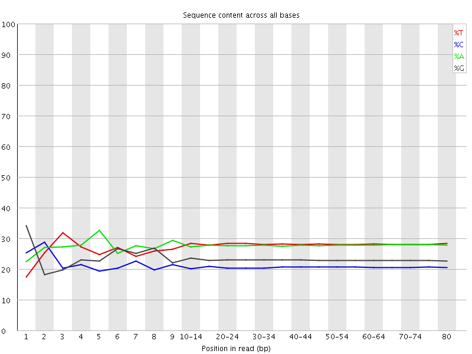

![[OK]](Icons/tick.png) Basic Statistics
Basic Statistics
| Measure | Value |
|---|---|
| Filename | RA035_R1.fq.gz |
| File type | Conventional base calls |
| Encoding | Sanger / Illumina 1.9 |
| Total Sequences | 6564216 |
| Filtered Sequences | 0 |
| Sequence length | 80 |
| %GC | 44 |
Per base sequence quality

Per sequence quality scores
![[WARN]](Icons/warning.png) Per base sequence content
Per base sequence content

![[FAIL]](Icons/error.png) Per base GC content
Per base GC content
Per sequence GC content

Per base N content

Sequence Length Distribution

Sequence Duplication Levels
Overrepresented sequences
| Sequence | Count | Percentage | Possible Source |
|---|---|---|---|
| GGGGGGGGGGGGGGGGGGGGGGGGGGGGGGGGGGGGGGGGGGGGGGGGGG | 97387 | 1.4836044395857784 | No Hit |
| AGGGGGGGGGGGGGGGGGGGGGGGGGGGGGGGGGGGGGGGGGGGGGGGGG | 6781 | 0.10330251167847006 | No Hit |
Kmer Content
| Sequence | Count | Obs/Exp Overall | Obs/Exp Max | Max Obs/Exp Position |
|---|---|---|---|---|
| GGGGG | 11447845 | 33.870968 | 39.88732 | 7 |
| CCCTC | 2379040 | 8.937651 | 14.507574 | 15-19 |
| CCTCA | 2829880 | 7.972365 | 54.624325 | 1 |
| CTCAG | 2946465 | 7.463358 | 49.301407 | 2 |
| TCAGC | 2783825 | 7.051393 | 48.060783 | 3 |
| CTGAG | 2995205 | 6.8213983 | 32.878666 | 9 |
| GCTGA | 2858480 | 6.510015 | 32.55077 | 8 |
| GAGGG | 2598660 | 6.412643 | 31.109352 | 4 |
| TCCCT | 2275795 | 6.378838 | 9.9443445 | 15-19 |
| CAGCT | 2353670 | 5.961816 | 12.045266 | 4 |
| ATCCC | 2108815 | 5.9409738 | 28.92668 | 9 |
| TGAGG | 2829830 | 5.794567 | 26.088327 | 3 |
| AGCTG | 2395140 | 5.454786 | 6.271222 | 40-44 |
| AGGGA | 2642855 | 5.4393206 | 25.961893 | 5 |
| GATCC | 1997725 | 5.0602117 | 25.701372 | 8 |
| GGATC | 2028655 | 4.620139 | 23.193201 | 7 |
| GGGAT | 2244470 | 4.595941 | 21.337852 | 6 |
| TTTTT | 3338850 | 3.8865633 | 4.5794363 | 2 |
| AAAAA | 3232305 | 3.859533 | 4.330887 | 70-74 |
| CCCAG | 847000 | 2.8756077 | 5.1282105 | 1 |
| CAGCC | 711230 | 2.4146614 | 5.3200846 | 4 |
| GCCTC | 647140 | 2.1859174 | 5.2933755 | 1 |
| CAGCG | 661990 | 2.0207446 | 40.582542 | 4 |
| GCCTG | 633640 | 1.9243848 | 5.1412387 | 1 |
| CGCTG | 631685 | 1.9184474 | 39.993553 | 7 |
| AGCGC | 613505 | 1.8727425 | 40.170883 | 5 |
| GCGCT | 603860 | 1.8339418 | 39.936924 | 6 |
| ACCCT | 593965 | 1.6733239 | 6.681315 | 9 |
| GACCC | 464990 | 1.5786642 | 7.6145096 | 8 |
| GGGAC | 520805 | 1.4293841 | 6.242111 | 6 |
| GGACC | 436490 | 1.3323989 | 6.7813597 | 7 |